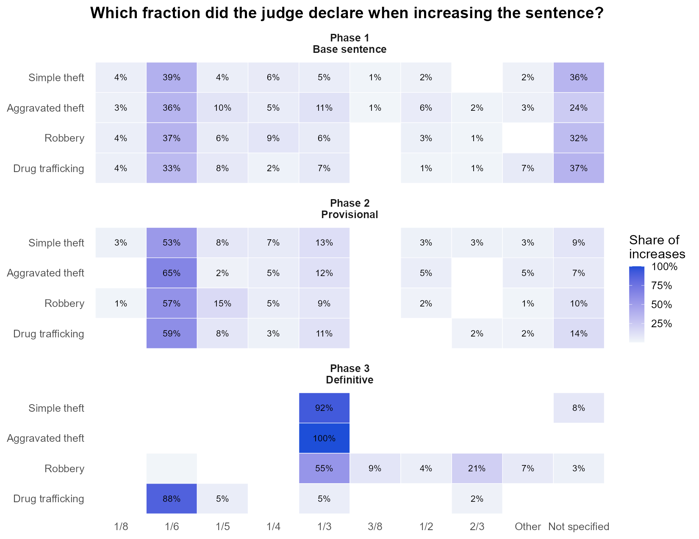

flowchart LR A["Fase 1<br/>Pena-base<br/><small>art. 59: culpabilidade, antecedentes,<br/>circunstâncias, consequências</small>"] --> B["Fase 2<br/>Pena provisória<br/><small>agravantes e<br/>atenuantes</small>"] B --> C["Fase 3<br/>Pena definitiva<br/><small>causas de aumento<br/>e de diminuição</small>"] C --> D["Pena final<br/><small>concurso de crimes,<br/>crime continuado</small>"]
Dosimetria da pena em números: a metodologia estatística de uma tese de doutorado
Hugo Batista da Silva
Nota
Linguagem: R (data.table, MASS, car, lmtest, caret, cluster) · Tipo: consultoria estatística para um doutorado em Direito · Dados: públicos no OSF (estudo sobre gênero, estudo sobre confissão) · Resultados: 1 tese e 3 artigos revisados por pares
Sobre o projeto
Como os juízes brasileiros calculam, na prática, uma pena criminal? O Código Penal define um método em três fases (a dosimetria trifásica), mas deixa bastante espaço para a discricionariedade: a lei diz quais fatores aumentam ou diminuem a pena e, muitas vezes, não diz em quanto.
Gabriel Silveira de Queirós Campos, doutorando em Direito, queria medir empiricamente essa discricionariedade no Tribunal de Justiça de São Paulo (TJ-SP). Fui responsável por toda a metodologia estatística: transformar decisões judiciais em dados, o plano amostral, a estratégia de análise e as respostas à banca examinadora. A metodologia recebeu nota máxima da banca, e a mesma base de dados deu origem a três artigos dos quais sou coautor.
Esta página se concentra no que considero a parte mais importante do trabalho: as decisões de planejamento, e o porquê de cada uma delas.
1. Do método jurídico à base de dados
O primeiro problema não era estatístico: uma sentença é um texto jurídico longo, e não existia base de dados. A solução foi desenhar um instrumento de coleta que espelha as três fases da dosimetria, de modo que cada decisão fosse transcrita exatamente na ordem em que o juiz raciocina.
O fluxo da pesquisa:
flowchart LR S["Condenações de 2022<br/>contadas por crime"] --> N["Tamanho da amostra<br/>população finita"] --> F["Sorteio aleatório e<br/>codificação manual por fase"] --> L["Limpeza,<br/>16 bases"] --> M["Testes, modelos<br/>e robustez"]
Cada fator jurídico virou uma variável binária (presente ou não na decisão), a fração declarada pelo juiz foi registrada como texto e a pena de cada fase foi convertida em dias, para que os quatro crimes pudessem ser analisados na mesma escala. Foi construída uma base para cada crime × fase, dezesseis no total.
2. Plano amostral
Foram estudados quatro crimes: furto simples, furto qualificado, roubo e tráfico de drogas. Para cada um, contou-se o número de condenações em 2022 e calculou-se a amostra mínima pela fórmula para população finita, com 95% de confiança, margem de erro de 5% e variância máxima (\(p = 0.5\)):
\[n = \frac{N \, z^2 \, p(1-p)}{e^2 (N-1) + z^2 \, p(1-p)}\]
| Crime | Condenações (N) | Amostra mínima | Coletadas | Amostra final |
|---|---|---|---|---|
| Furto simples | 487 | 216 | 266 | 216 |
| Furto qualificado | 695 | 248 | 288 | 248 |
| Roubo | 1.695 | 314 | 330 | 314 |
| Tráfico de drogas | 26.919 | 379 | 377 | 373 |
| Total | 1.157 | 1.261 | 1.151 |
Dois detalhes desse plano merecem destaque:
- Os codificadores coletaram uma margem acima do mínimo. Isso protege a amostra contra as perdas que sempre aparecem na codificação manual: decisões duplicadas, decisões que não são condenações, inconsistências entre as fases. Todas as 1.261 decisões foram usadas no artigo sobre gênero.
- Após a limpeza, a tese usou exatamente o tamanho mínimo. Os casos duplicados foram removidos e a amostra foi reduzida ao \(n\) calculado por meio de uma subamostra aleatória com semente fixa, de modo que a amostra final continua sendo uma amostra aleatória simples e qualquer pessoa pode reproduzi-la. No tráfico de drogas, a coleta ficou ligeiramente abaixo do mínimo (377 contra 379) e mais quatro decisões foram perdidas por inconsistências no número do processo. Com as 373 decisões finais, a margem de erro é de 5,04% em vez de 5%, diferença documentada na tese.
3. A estratégia de análise: um modelo por fase
A decisão metodológica mais importante foi a definição da variável resposta. Modelar diretamente a pena final misturaria os efeitos de todas as fases: uma confissão (fase 2) e o emprego de arma de fogo (fase 3) competiriam na mesma equação, enquanto, juridicamente, atuam em momentos diferentes e sobre bases diferentes.
Por isso, cada fase ganhou seu próprio modelo e, nas fases 2 e 3, o desfecho é a variação da pena em relação à fase anterior:
\[\Delta_{\text{fase } k} = \text{pena}_{k} - \text{pena}_{k-1}\]
Na prática, em R:
furtos2 <- merge(furtos2, furtos1, by = "processo")
furtos2[, dif_pena := penaemdias - penaemdias_1]
fit <- lm(formula = dif_pena ~ reincidencia + incendio + confissao + usou_frac,
data = furtos2)Com isso, cada coeficiente tem uma leitura jurídica direta: quantos dias esse fator acrescenta ou retira nesta fase, dado tudo o que aconteceu antes. Isso gerou 12 modelos (4 crimes × 3 fases), com variáveis selecionadas por stepwise via AIC entre as juridicamente possíveis, intervalos de confiança de 95% e VIF para multicolinearidade. O R² ajustado vai de 0,38 a 0,86.
4. Decisões guiadas pela evidência
Uma boa metodologia também é feita dos caminhos que não foram seguidos, e das razões para isso.
- Testes não paramétricos. As penas estão longe da normalidade (Kolmogorov-Smirnov, Lilliefors, Anderson-Darling e Shapiro-Wilk rejeitaram a normalidade), então as comparações entre grupos, por exemplo entre as penas aplicadas por juízes e por juízas, foram feitas com testes de Wilcoxon / Mann-Whitney.
- O agrupamento (clusterização) foi testado e descartado. Em busca de “perfis” de dosimetria, foram testados cinco algoritmos: k-means, PAM com distância de Gower, agrupamento hierárquico de Ward, DBSCAN e k-prototypes. Todos separaram as decisões apenas pelo tamanho da pena, o que não traz nada de novo. Em vez de forçar um resultado, isso foi documentado e substituído por um agrupamento orientado pela teoria: as penas finais mais frequentes foram rastreadas de volta pela combinação de fatores em cada fase.
- Sem correção automática para comparações múltiplas. O estudo é observacional e exploratório, com muitos testes relacionados entre si. Correções como a de Bonferroni aumentariam fortemente o erro tipo II; por isso, a interpretação se apoia no tamanho dos efeitos, nos intervalos de confiança e na plausibilidade jurídica (Perneger, 1998; Gelman & Loken, 2014). Essa escolha foi justificada por escrito à banca.
- Modelos multinível por comarca ficaram para trabalhos futuros. São um refinamento relevante, mas a amostra foi planejada para estimar proporções e efeitos por crime, e não a variância entre comarcas.
5. Robustez, a pedido da banca
Para o artigo sobre gênero, a banca examinadora pediu uma validação mais aprofundada dos modelos. A auditoria incluiu:
| Verificação | Objetivo |
|---|---|
| VIF | Multicolinearidade entre os fatores jurídicos |
| Breusch-Pagan | Homocedasticidade dos resíduos |
| Shapiro-Wilk nos resíduos padronizados + gráficos de resíduos | Normalidade dos erros |
| Divisão treino / teste 70/30 | Estabilidade dos coeficientes fora da amostra |
| Validação cruzada com 10 folds | Estabilidade preditiva |
| Sensibilidade retirando uma variável por vez | Quanto cada variável contribui para o R² ajustado |
6. O que os dados mostraram
A dispersão cresce fase após fase
Se todos os juízes aplicassem o método da mesma forma, casos com as mesmas características receberiam penas semelhantes. O coeficiente de variação da pena mostra que a discricionariedade se acumula ao longo das fases: no tráfico de drogas, ele vai de 14% na pena-base a 53% após a fase 3.

A fase 3 é a que mais altera a pena
| Crime | Fase 2: variação média | Fase 2: casos alterados | Fase 3: variação média | Fase 3: casos alterados |
|---|---|---|---|---|
| Furto simples | 38 dias | 41% | 65 dias | 34% |
| Furto qualificado | 84 dias | 47% | 167 dias | 44% |
| Roubo | 149 dias | 47% | 834 dias | 89% |
| Tráfico de drogas | 180 dias | 42% | 487 dias | 49% |
Os juízes têm forte preferência por algumas frações
Onde a lei não fixa a fração, 1/6 predomina: é a fração mais declarada nas fases 1 e 2 para todos os crimes. Na fase 3, em que a lei estabelece um intervalo, os juízes ficam no seu limite inferior: 1/6 para as causas de aumento da Lei de Drogas (intervalo de 1/6 a 2/3) e 1/3 para o roubo (intervalo de 1/3 a 1/2); para o furto durante o repouso noturno, a lei fixa 1/3. Uma parcela importante das decisões na fase 1 não declara fração alguma, o que dificulta o controle da fundamentação.

Quantos dias vale cada fator

Alguns resultados: a confissão espontânea retira entre 29 e 150 dias na fase 2, dependendo do crime; o emprego de arma de fogo acrescenta cerca de 900 dias ao roubo; a tentativa e o tráfico privilegiado retiram mais de 1.000 dias. No tráfico de drogas, o crime cometido em situação de calamidade pública, na prática a pandemia de COVID-19, acrescentou cerca de 400 dias.
A confissão realmente vale a pena?
Essa pergunta virou um dos artigos. A jurisprudência (Súmula 231 do STJ) impede que uma atenuante leve a pena abaixo do mínimo legal; assim, o réu que confessa, mas já tem a pena-base fixada no mínimo, não ganha nada. Entre os réus que confessaram e não tinham nenhuma agravante, a proporção cuja pena não se alterou na fase 2 foi:
| Crime | Casos | Confissão sem efeito | Redução média quando houve efeito |
|---|---|---|---|
| Furto simples | 32 | 66% | 82 dias |
| Furto qualificado | 36 | 36% | 137 dias |
| Roubo | 37 | 57% | 269 dias |
| Tráfico de drogas | 59 | 59% | 318 dias |
Publicações
Os três artigos abaixo foram escritos a partir desta mesma base de dados e amostra. Sou coautor de todos eles, e eles estão listados no meu perfil no ORCID.
- Campos, G. S. Q.; Bedê, A.; Bussinguer, E. C. A.; Silva, H. B. (2025). Uncovering judges’ gender effects in Brazilian sentencing: A counter-hegemonic role of women in the criminal justice system? International Journal of Law, Crime and Justice, 83. doi:10.1016/j.ijlcj.2025.100789
- Campos, G.; Bedê Jr., A.; Bussinguer, E. C. A.; Silva, H. B. (2026). Gênero e sentença criminal. Revista de Estudos Empíricos em Direito, 13. doi:10.19092/reed.v13.995
- Campos, G.; Bedê Jr., A.; Silva, H. B. (2026). A confissão realmente vale a pena? Revista de Estudos Empíricos em Direito, 13. doi:10.19092/reed.v13.1081
Reprodutibilidade
Os dados e os scripts em R são públicos no OSF (estudo sobre gênero, estudo sobre confissão). As figuras e tabelas desta página foram geradas por este script, que executa o script original dos modelos sem alterações e exporta apenas resultados agregados.